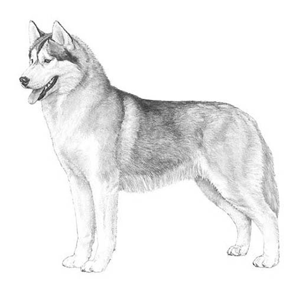
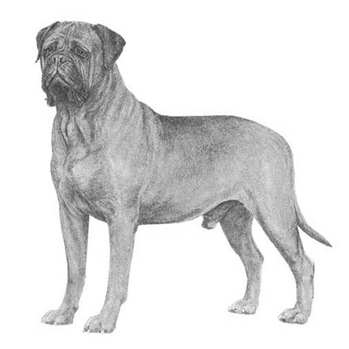

| Image |
Breed |
Description |
 |
Alaskan Malamute |
An immensely strong, heavy-duty worker of spitz type, the Alaskan Malamute is an affectionate, loyal, and playful but dignified dog recognizable by his well-furred plumed tail carried over the back, erect ears, and substantial bone. The Alaskan Malamute stands 23 to 25 inches at the shoulder and weighs 75 to 85 pounds. |
|  |
Siberian Husky |
Siberian Husky, a thickly coated, compact sled dog of medium size and great endurance, was developed to work in packs, pulling light loads at moderate speeds over vast frozen expanses. Sibes are friendly, fastidious, and dignified. The graceful, medium-sized Siberian Husky's almond-shaped eyes can be either brown or blue and sometimes one of each and convey a keen but amiable and even mischievous expression. |
|  |
Bullmastiff |
Fearless at work, docile at home, the Bullmastiff is a large, muscular guarder who pursued and held poachers in Merry Old England'¿merry, we suppose, for everyone but poachers. Bullmastiffs are the result of Bulldog and Mastiff crosses. The Bullmastiff isn't quite as large as his close cousin the Mastiff. Still, standing as high as 27 inches at the shoulder and weighing between 100 and 130 pounds, this is still a whole lot of dog. |